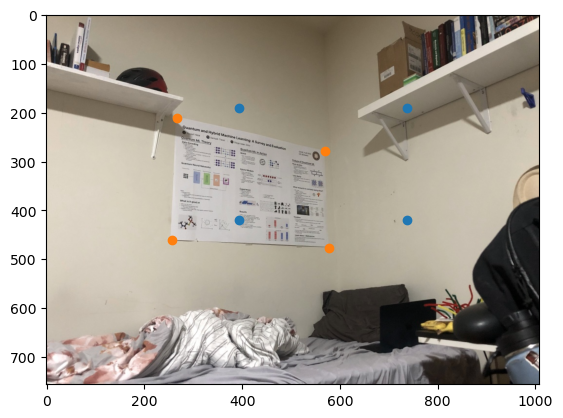

Stitching Photos into Mosaics Project
Part A: Image Warping and Mosaicing
Shooting the Images
All of the base images used in the project are displayed below. These images were used to produce 3 mosaics and 2 rectified images.
Rectified Images
Mosaic 1: Horizon Set 1 (Left to Right)
Mosaic 2: Horizon Set 2 (Left to Right)
Mosaic 3: Indoor Set (Left to Right)
Homography Transformation Theory
Introduction
A homography (or projective transformation) is a non-singular linear transformation that maps points from one plane to another while preserving collinearity. In computer vision and image processing, homographies are fundamental for describing the relationship between two different views of a planar surface.
Mathematical Formulation
Basic Definition
Given two corresponding points in homogeneous coordinates, p = (p₁, p₂, 1)ᵀ and q = (q₁, q₂, 1)ᵀ, a homography H maps these points according to:
where ∝ denotes equality up to a scale factor, and H is a 3×3 matrix:
Expanded Form
Writing this out explicitly:
where w is a scaling factor (w ≠ 0).
Linear System
Rearranging these equations eliminates the homogeneous scale factor:
Solution Methods
Direct Linear Transform (DLT)
For N ≥ 4 point correspondences, we obtain an overdetermined system:
where A is a 2N×8 matrix, h is the vector of unknowns (h₁₁, h₁₂, ..., h₃₂), and b is the vector of known values.
Least Squares Solution
The optimal solution in the least squares sense is given by:
This minimizes ||Ah - b||² and provides the best fit homography matrix given noisy measurements.
When we have four or more correspondences, the system is overdetermined, and we can solve for H by applying least squares, yielding an optimal solution.
Recovering the Homography
To recover a homography transformation, as described in the previous section, we need two sets of points (mapped from and mapped to). The points used for the homography transformation calculation of the poster is shown below. The purpose of this is to determine the image fame of reference when looking at the poster straight on.
Corner Warp
To warp the image, we warp the corners to produce an image boundary. Next, we will use the fully warped image to interpolate - mapping to every pixel within the image boundary.
Image Rectification
Finally, I warped the poster image. The raw and zoomed images are shown.
A second image rectification on a wooden frame.
Image Mosaic'ing
Image mosaic'ing differed from image rectification in a couple of ways. Firstly, common points had to be selected from each of the images in the mosaic for the homography calculation.
Then, to construct the mosaic, beyond overlaying the images, I also had to blend. Shown below are a naive blending method and a logical one which employs laplacian stacks.
Shown below are a couple of other mosaics I made.
Part B: Autostiching - Feature Finding and Matching
To automate stitching, I extracted corner features uniformly throughout the image, matched the features between images, and used the matched point features to execute image stitching as in the previous part. In this part of the website, I'll walk the reader through autostitching of the two pictures in Horizon #1. At the end, I'll show the results for stitching Horizon #2 and Inside Loth.
Harris Corner Detection
Adaptive Non-Maximal Suppression (ANMS)
Theory
In feature detection, it’s essential to maintain a good spatial distribution of interest points across the image, especially for applications like image stitching, where overlap areas may be limited. However, selecting interest points solely based on strength can lead to clusters of features in specific areas, leaving other regions sparse.
Adaptive Non-Maximal Suppression (ANMS) is a method that addresses this issue by ensuring features are well-distributed. It does so by suppressing interest points based on a computed "corner strength" and a neighborhood radius.
Suppression Radius Calculation
To distribute features across the image, ANMS iteratively adjusts a suppression radius, r, until the desired number of interest points, nip, is reached. At each iteration, points are suppressed unless they are the maximum within a radius r. This means only the strongest features within their neighborhood are retained.
For each interest point xi, the minimum suppression radius ri is computed as:
ri = min |xi - xj|, such that f(xi) < crobust * f(xj)
Here, xj is a neighboring point, I is the set of all interest points, and crobust (set to 0.9) is a parameter ensuring that xj has significantly higher strength to warrant suppression.
Result of ANMS
ANMS results in a set of well-distributed interest points, with each retained point having local maxima within its suppression radius. This method improves feature coverage across the image, reducing the likelihood of missed matches in overlapping regions.
The ANMS algorithm’s output is a list of interest points sorted by strength, providing a balance between spatial distribution and feature strength.
Feature Descriptor Extraction
Overview
Once interest points are identified in an image, feature descriptors are extracted around each point to enable robust matching across images.
Local Patch Extraction
For each detected interest point, a local patch centered around the point is sampled. I sampled every 5th pixel in both directions of a 40x40 axis-aligned patch.
Intensity Normalization
I normalized each patch so that the result was a vector of mean 0 and standard deviation 1. This improves the correlation metric.
Descriptor Matching
After extraction, the descriptors can be compared across images using Euclidean distance. Matching is achieved by finding the nearest neighbors between descriptors in different images. To maintain quality in the descriptors, I used a threshold for t = e1-NN / e2-NN of 0.7, where e1-NN and e2-NN are the first and second smallest Euclidian descriptor distances of a given feature. That is, features with t > 0.7 were excluded.
RANSAC for Robust Feature Matching
Overview
When matching feature descriptors across images, not all matches are correct due to noise, occlusions, or repetitive patterns in the images. This is very evident in the previous two images. To handle these outliers, we use RANSAC (Random Sample Consensus), estimating a transformation between images by iteratively selecting inlier matches and discarding outliers.
How RANSAC Works in Feature Matching
The RANSAC algorithm proceeds as follows:
- Random Sampling: Select 4 feature pairs at random.
- Model Estimation: Based on the selected sample points, compute an exact homography transformation (H).
- Inlier Counting: Compute inliers where dist(pi', H pi) < ε.
- Iterate and Select Best Model: Repeat the above steps for a fixed number of iterations. After all iterations, use the largest set of inliers.
Result
Using RANSAC, I was able to filter the number of descriptors down to ones that matched each other within a 3-pixel radius post-homography. That is, I used ε = 3
.This allowed me to compute a homography transformation, H, and perform stitching, as before.
Auto-Stitched vs. Manually-Stitched Mosaics
Below are three pairs of images showing auto-stitched mosaics alongside manually-stitched versions.

Final Result
As before, I obtain the final results by blending!
The coolest thing that I learned in the project was the process of auto-stitching! In particular, I enjoyed the ANMS and RANSAC algorithms! I found them to be intricate, and rewarding to understand.